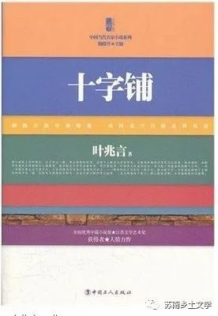

《十字铺》
1、南京特色地点风俗
那是个初秋的黄昏,太阳已见红,落在夫子庙前的秦淮河上,明明暗暗的有些烧眼。没有风,没有云,人站在秦淮河边,只感到一阵阵暴热。人像开闸似的突然多起来,有听戏散场的,有吃完了风味小吃的,有准备去听戏去风味小吃的,前呼后拥。士新走进奇芳阁。这是夫子庙最大的一家茶楼,热闹非凡。士新怏怏地往里走,到后楼的栏杆边,拣个空位子坐下。要了一壶茶,一碗大汤干丝,几个菜包子当晚饭。
2、乡村自然景色
三个人站在山顶上往下望。远远的有白云正往这边飘,山下风景如画,麦田青翠,菜花金黄,小河曲曲弯弯,像道徐徐升起的轻烟。看得见农家孩子在放牛,那牛悠闲地走着,小得仿佛是甲虫。
3、男女差别的社会现实
弟弟妹妹知道哥哥如今和关家的少爷是朋友,称兄道弟,来去同行,在南京又是一起住的,羡慕得不得了。妹妹是女孩,只在心里羡慕,弟弟却吵着要哥哥带他去关家见识见识。从关家参观回来,士新的弟弟戴着一副跟哥哥讨来的墨镜,俨然也成了枞阳的一尊人物。
4、战争、饥荒、动乱，构成了那个时代的底色
大荒之年,不是旱便是涝,到处都听得到危言耸听的抢米抗租新闻。公务缠身的士新做梦也想不到,书呆子兮兮的季云会和一场所谓的暴动有关。他不会想到季云不仅卷入得如此之深,而且因此牺牲一条性命。
军队将小镇围得水泄不通,到处鸡飞狗跳,偶尔还听得见稀稀落落的枪声。学校自然是搜索的重点,几乎所有的学生都受到审讯。折腾了几天以后,警察局长领着一队人马拜访校长家。出乎意料之外,身为民国元老的校长没有大发雷霆,而是放下架子亲自率领局长一间接一间房子参观。
5、生活民风：在地窖里收藏粮食
地窖里藏的全是准备越冬的山芋,一股霉烂味令人作呕。
《枣树的故事》
1、五十年代文人的状况
花一年的时间体验所谓生活，对于作家这位机灵的人来说，不仅绰绰有余，而且简直有些奢侈。体验生活对于五十年代的文人，是个含糊不清的字眼。事实上，我们这位作家常常闲着无事可做。在一个与世颇隔膜的江心小岛屿上，作家品尝到了做仙人的寂寞。
2、男女关系混乱
我从岫云那儿知道了老红和老板的淫乱关系，她说起这类事来多少有点津津有味。
3、乡镇自然风景
太平镇虽然是镇，毕竟有残存的田园风格。稀稀落落的树木，白墙黑瓦的矮房子，三五缕炊烟，鸡鸭，牛羊，猫和狗，滚了一身泥的猪，都在街上走。出了镇，满眼大块小块的农田，一道小溪绕来绕去。秋雨过后，江风徐徐吹来，麦苗青青。
《炮山鸡》
1、当代打工人现状
寒露知道老魏说的不是心里话，这年头，谁不想当老板，谁愿意替人打工。心里不痛快，话不投机，除了早早上床睡觉，没别的事可干。于是老一套，非常机械的前奏，开始很快，结束也很快。
《悬挂的绿苹果》
1、当代人的生育观
张英说:“可是我们还可以有一个呀!”她已经打听过了,独生子女的基本国策,并不妨碍她再生-一个。然而青海人表示他坚决不准备再要小孩。.
又过了一个多月,张英发现自己有了身孕。“怎么搞的,我已经说过了,我不要!”青海人光起火来。丈夫这么不近人情,张英只有哭一场,哭到临了,扬起泪汪汪的眼睛,可怜巴巴地看着他:“我都听你的好了!”
“那好,我明天陪你去医院。”青海人说得很干脆。
2、八九十年代乡村人的娱乐方式
剧团的工作带有流动性质。虽然有个像模像样的剧场,但是还得不断地下乡巡回演出。现代市民喜欢的是轻音乐会,听流行歌曲。才子佳人的老戏,只得到农村去找市场。
叶兆言的小说具有较强的故事性和可读性，这是我读完他的作品后的第一感受。他的小说追求的是朴素和平实，并没有故意地去求新求异，只是想讲好一个故事罢了。虽然他进行了不同形式的艺术探索,寻求叙事艺术的创新,但是始终保持小说“讲故事”这一原始功能。重视故事性,形成了他小说独特的艺术特征。也因此他的作品中很少有具体的乡土色彩，乡土融入在作品中人物的言行举止和世界观中。在他的作品中，乡土已经不是一个可观可感的存在物，而是一种气质和精神，潜移默化地影响着人物的发展变化和故事的走向。
这对我们的项目研究带来了一定的思考，是否具有可观可感的具象乡土才是乡土文学？就像欧阳江河所说，哪怕现在已经从农耕时代推进到了当代，从乡村走向了城市，走向了世界，我们的写作，依然跟乡村有着深不可测的、本源的、心灵的和隐喻上的联系。这个联系，不仅和往事、怀旧、乡愁有关，也为写作的当代性、日常性提供了一份现场的、活生生的见证。“乡村关乎文学，关乎人心，关乎我们的栖居和处所。不管我们走到哪里，不管写作变成什么样子，写作深处被照耀过、疼痛过、感恩过的那个乡村，也依然是我们出发的地方。”